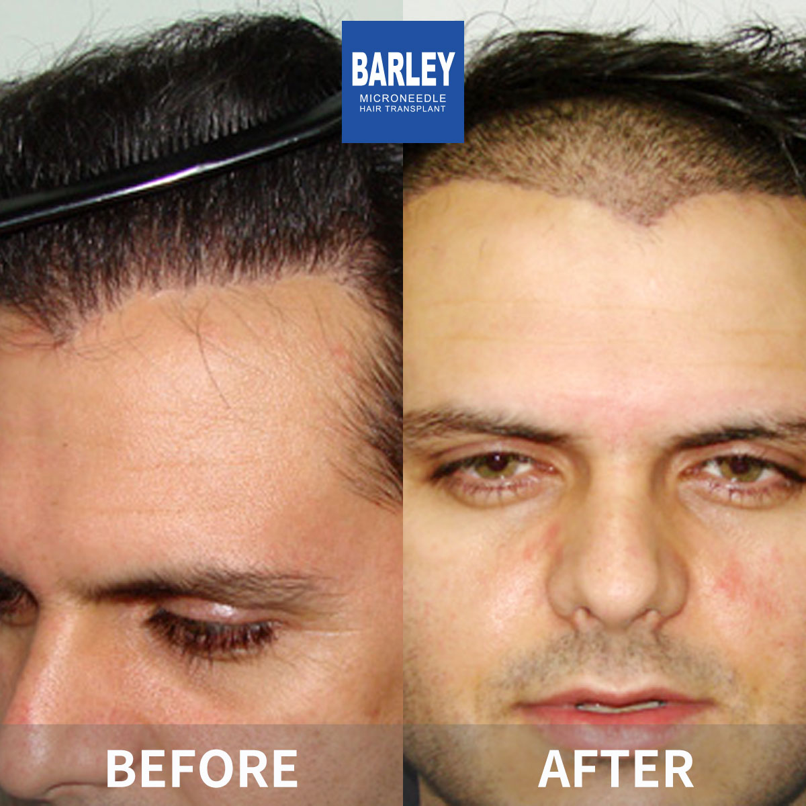
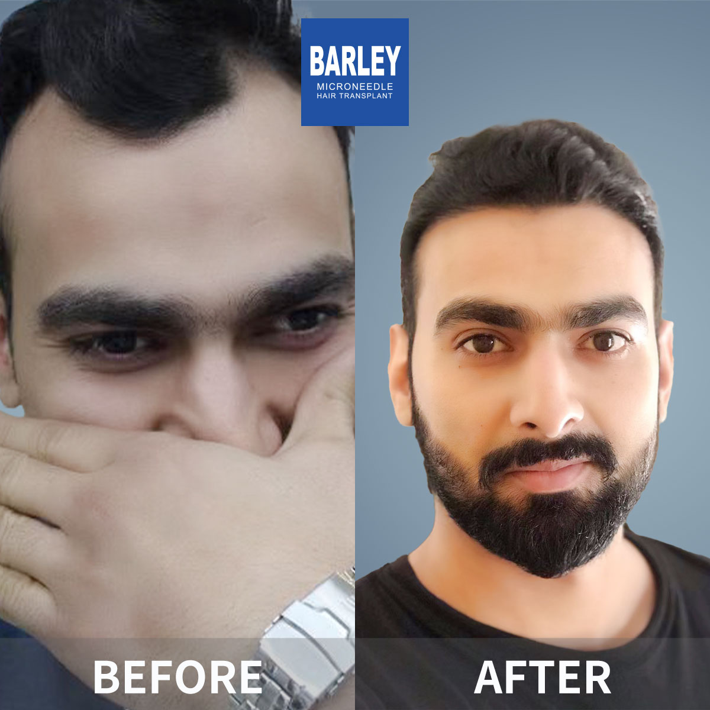
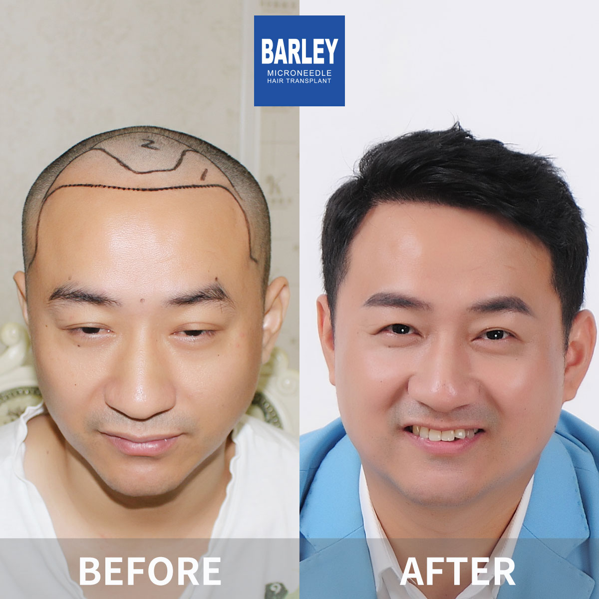
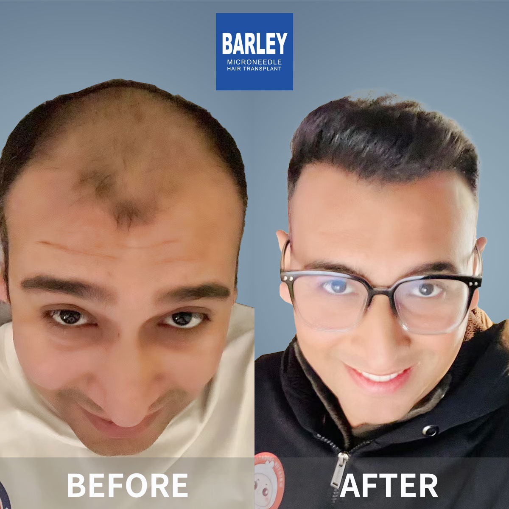
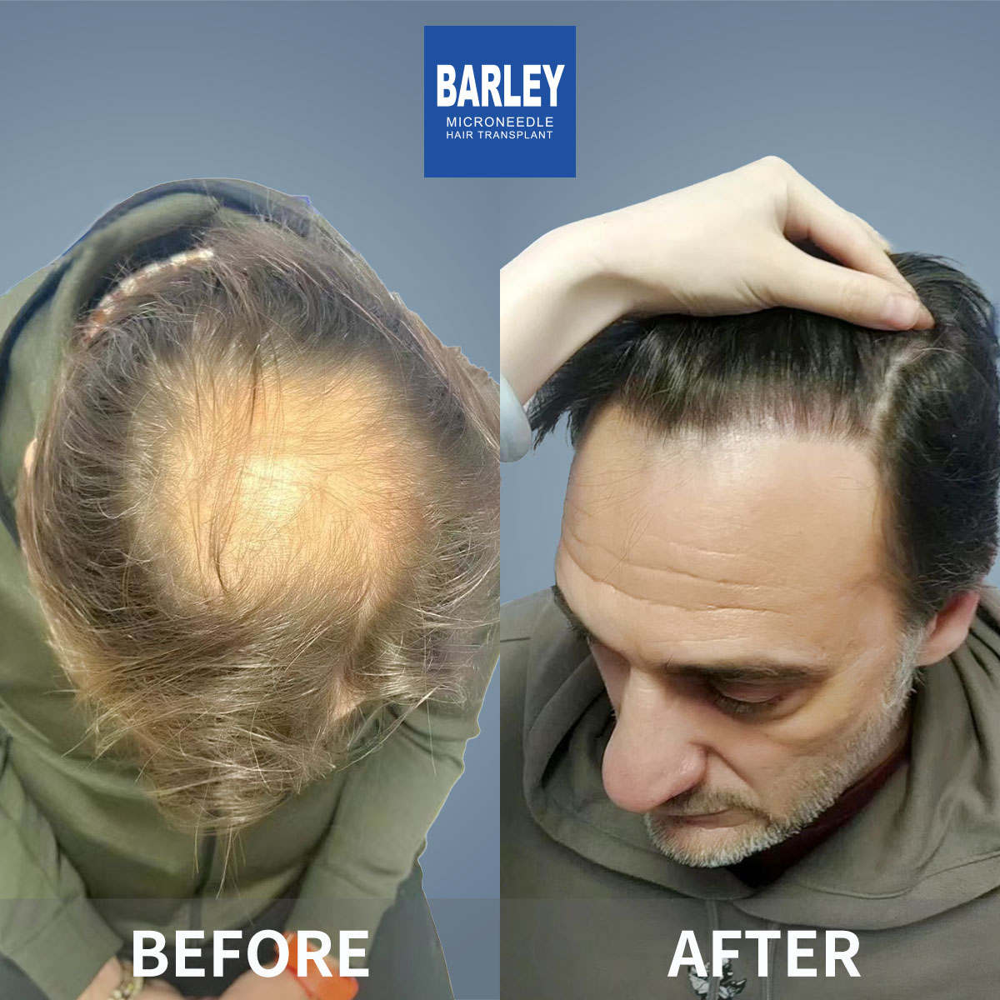
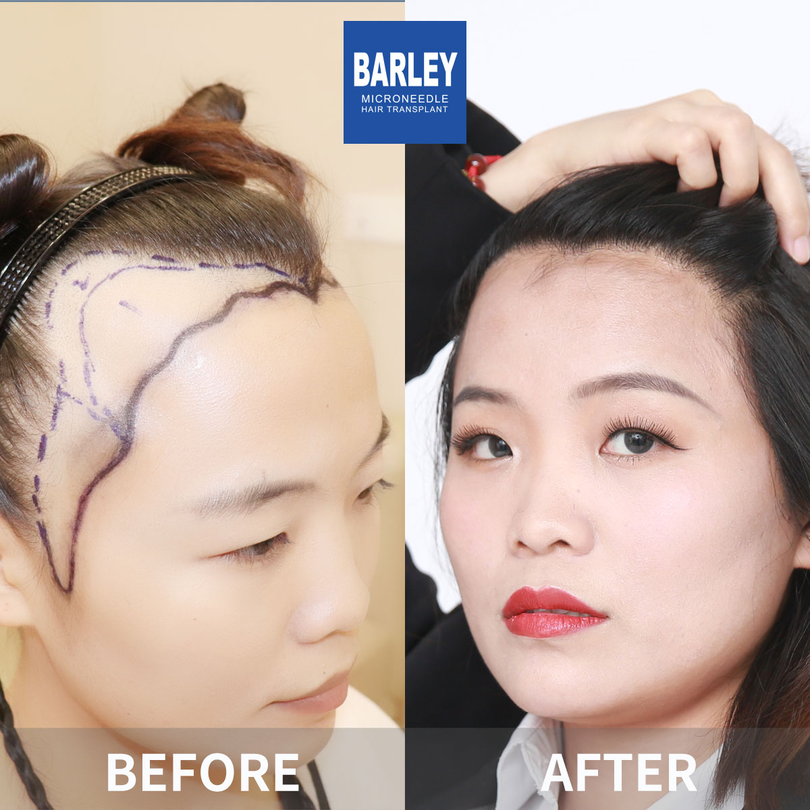
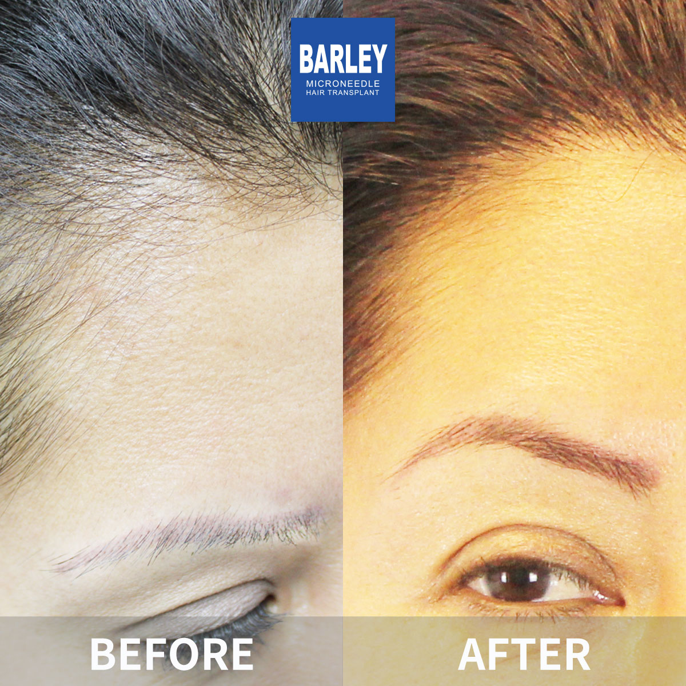

Explore our portfolio of successful hair restoration transformations




















See the impact we've made in hair restoration
Experience our expertise through authentic patient transformations
All hair transplant cases are authentic, unfiltered, and unretouched. No stock photos, no beauty filters—just genuine before and after comparisons that speak for themselves.
Customized implantation following natural hair growth patterns, with precise density and angle control. Results blend seamlessly with existing hair—completely undetectable.
Carefully selected healthy follicles with meticulous separation and implantation. Exceptional survival rate, uniform thick growth, and long-lasting results with just one procedure.
Moments captured with our satisfied patients

Posing with our medical team after successful procedure

Celebrating fantastic results with our doctors

Another satisfied patient shares their joy

Patient with our specialist before discharge

Happy patient with Dr. Chen post-treatment

Excited patient showing their new look

Patient delighted with their transformation

Patient starting fresh with amazing results
Hear from our satisfied patients around the world
"The before and after photos I saw on this page convinced me to choose our hospital. Now my own transformation is incredible! The real patient results speak for themselves!"
"Seeing all the successful hair transplant cases gave me so much confidence. Each case study shows amazing, natural-looking results. I'm now one of those success stories too!"
"The man hairline restoration case studies were exactly what I needed to see. The results looked so natural, and my result is just as good! People tell me I look 10 years younger!"
"I researched on Google and Bing for months, and our hospital's case gallery stood out the most. All the before and after comparisons are authentic. My result matches the amazing quality shown here!"
"The women hair restoration case studies showed real results that gave me hope. I was losing hope after years of trying, but now I have my Natural Look Restored! Thank you our hospital!"
"All the successful hair transplant cases on this page prove our hospital's expertise. I had the same amazing result - no scarring, perfect density, and completely natural-looking hair!"
Experience our modern and comfortable facilities

Private and professional

Comfortable post-op space
Welcoming entrance

Our state-of-the-art facility

Relax in our premium lounge

Sterile and advanced
Find answers to common questions about hair transplantation
Click to copy contact information
15810155700
+86 13730143529
hairtransplant@qq.com